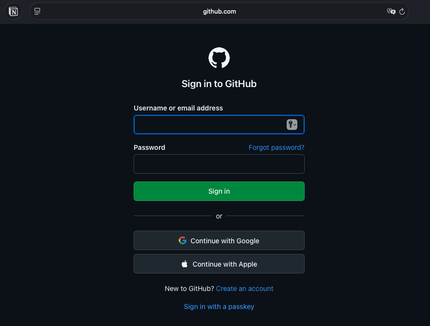
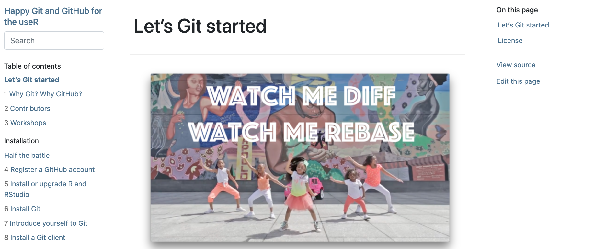
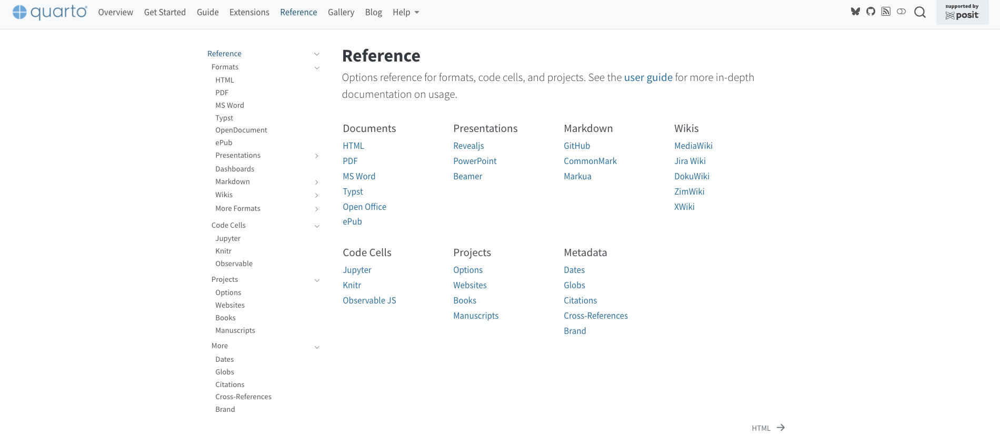
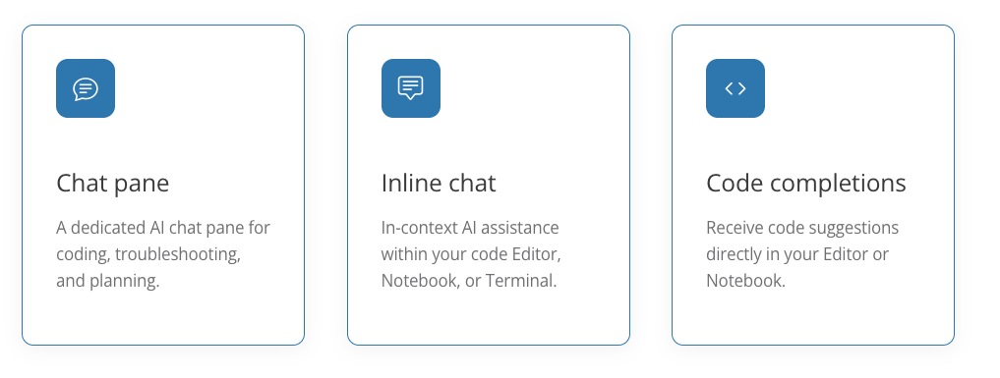

Introducción a Positron
Herramientas modernas para ciencia de datos y análisis reproducible
21 de enero de 2026
Contenido
- Interfaz de Positron
- Migración desde RStudio
- Escritura de código en R
- Git y GitHub
- Documentos con Quarto
- Asistente de IA
Interfaz de Positron
Componentes principales de la interfaz

Componentes principales de la interfaz
- Activity Bar: Acceso rápido a vistas principales (Explorer, Search, Source Control, Extensions)
- Primary Side Bar: Muestra contenido según la vista seleccionada (archivos, outline, Assistant)
- Editor: Área central para escribir código, basado en VS Code
- Panel: Consola interactiva integrada y Terminal debajo del editor
- Secondary Side Bar: Panel derecho con Session (variables, plots), Connections, Help, History, Viewer
- Title Bar y Top Bar: Muestra archivo activo, selector de intérprete, herramientas globales
- Status Bar: Información de git branch, modo de lenguaje, versión Quarto, posición del cursor
Fuente: Layout de Positron
Layout de Positron
- Stacked (por defecto): Editor arriba, Consola y Terminal abajo, Variables y Plots a la derecha
- Side-by-side: Editor y consola lado a lado, útil para pantallas anchas
- Notebook: Enfocado en el editor, minimiza otros panes para trabajar con notebooks
- Assistant: Optimizado para flujo de trabajo centrado en el Assistant
- Componentes arrastrables y personalizables según tu flujo de trabajo
Fuente: Layout de Positron
Personalización de la interfaz
- Arrastrar y reorganizar componentes según necesidades
- Comandos para mostrar/ocultar paneles (View: Toggle Primary Side Bar, etc.)
- Presets de layout específicos para ciencia de datos
- Comando “Customize Layout…” para opciones más específicas
- Reset completo del UI a valores por defecto disponible
Fuente: Layout de Positron
Migración desde RStudio
¿Por qué migrar a Positron?
- IDE unificado: Explora y produce en un solo entorno gratuito asistido por IA
- Multi-lenguaje nativo: Python y R en el mismo entorno
- Basado en Code OSS: Misma base que VS Code, con funcionalidades añadidas para ciencia de datos
- Asistente de IA integrado: Positron Assistant diseñado específicamente para ciencia de datos
- Licencia gratuita: Elastic License 2.0, código fuente disponible
- Creado por Posit: Los mismos creadores de RStudio
Fuente: Positron | Migración desde RStudio
¿Por qué migrar a Positron?

Guía de migración
- Command Palette es fundamental: Presiona
Cmd+Shift+P(Mac) oCtrl+Shift+P(Windows/Linux) - Muchas acciones de RStudio están disponibles como comandos en el Command Palette
- Atajos de teclado de RStudio disponibles como opción configurable
- La mayoría de la documentación de VS Code aplica también a Positron
- Walkthrough interactivo: Comando “Welcome: Open Walkthrough…” → “Migrating from RStudio to Positron”
Fuente: Migración desde RStudio
Comparación RStudio vs Positron
- Base: RStudio es propietario; Positron basado en Code OSS (open source)
- Multi-lenguaje: RStudio enfocado en R; Positron nativo para Python y R
- IA: RStudio sin IA integrada; Positron con Assistant integrado
- Git: RStudio con pane básico; Positron con integración avanzada heredada de VS Code
- Extensiones: RStudio limitado; Positron con ecosistema completo de VS Code
- Command Palette: RStudio lo agregó tarde; Positron lo usa como método principal de navegación
Fuente: Migración desde RStudio
Escritura de código en R
Data Explorer
- Vista de datos tipo hoja de cálculo: Visualización interactiva de dataframes y archivos CSV/Parquet
- Panel de resumen: Estadísticas descriptivas para cada columna del dataset
- Barra de filtros: Filtros temporales para columnas específicas
- Complementa código: Diseñado para complementar workflows basados en código, no reemplazarlos
- Abre desde Variables Pane: Click en el ícono del dataframe en el panel de variables
- Comandos:
View(dataframe, "label")en R o%view dataframe labelen Python
Fuente: Data Explorer
Data Explorer

Ejecución de código R
- Consola integrada: Consola completamente interactiva en el Panel
- Ejecución desde editor: Seleccionar código y ejecutar con atajos de teclado
- Terminal integrado: Terminal del sistema también disponible en el Panel
- Output channels: Logs y salidas disponibles en canales del Panel
- Soporte para notebooks: Jupyter notebooks y documentos Quarto ejecutables directamente
Fuente: Layout de Positron
Panel de Variables
- Session Pane: Vista de todas las variables definidas en tu sesión activa
- Exploración de objetos: Navegación jerárquica de estructuras de datos complejas
- Vista de plots: Visualización de gráficos generados en la sesión
- Integración con Data Explorer: Click en dataframes para abrir en Data Explorer
- Información contextual: Detalles sobre tipos, dimensiones y estructura de objetos
Fuente: Layout de Positron
Git y GitHub
¿Qué es Git?
- Sistema de control de versiones distribuido: Rastrea cambios en archivos a lo largo del tiempo
- Historial completo: Mantiene registro de todas las versiones de tu proyecto
- Trabajo con ramas: Permite trabajar en diferentes features simultáneamente
- Colaboración: Facilita trabajo en equipo en el mismo código
- Revertir cambios: Posibilidad de volver a versiones anteriores cuando sea necesario
- Fusionar cambios: Integra trabajo de diferentes contribuidores
Fuente: Git en Positron
Conceptos fundamentales
- Repositorio: Carpeta con historial de cambios, puede ser local o remoto
- Commit: Snapshot de cambios con mensaje descriptivo
- Branch (rama): Línea de desarrollo independiente para experimentar sin riesgo
- Merge: Combinar cambios de diferentes ramas
- Remote: Repositorio en servidor (GitHub, GitLab) para sincronización
- Pull/Push: Traer/enviar cambios entre repositorio local y remoto
Fuente: Git en Positron
Flujo de trabajo Git/GitHub

Flujo de trabajo Git/GitHub
- Abrir repositorio: Open Folder para repositorio existente, New Folder from Git para clonar
- Inicializar Git: Source Control view → Initialize Repository para proyectos nuevos
- Staging y commit: Seleccionar archivos modificados, stage, commit con mensaje descriptivo
- Sincronizar: Push para enviar cambios, Pull para traer cambios remotos
- Branches: Crear ramas para features, cambiar entre ramas, crear pull requests
- Resolver conflictos: Editor de merge 3-way integrado para resolver conflictos
Fuente: Git en Positron
Github
Git en Positron
- Source Control view: Vista dedicada en Activity Bar para gestión de Git
- Integración nativa: Basada en VS Code, más poderosa que el Git pane de RStudio
- Extensiones incluidas: GitHub y GitHub Pull Requests integradas por defecto
- Visualización de diferencias: Comparación lado a lado de cambios
- Editor de merge: Resolución visual de conflictos con editor 3-way
- Comandos desde Command Palette: Acceso rápido a todas las operaciones Git
Fuente: Git en Positron
Buenas prácticas con Git
- Commits frecuentes y descriptivos: Mensajes claros sobre qué cambió y por qué
- Branching para features: Usar ramas para nuevas funcionalidades o experimentos
- Pull antes de Push: Siempre sincronizar cambios remotos antes de enviar
.gitignore: Excluir archivos temporales, outputs, datos grandes del control de versiones- Revisar cambios: Usar Source Control view para revisar qué se está commitando
Fuente: Git en Positron | Happy Git with R
Más sobre git y github
Fuente: Happy Git with R
Documentos con Quarto
¿Qué es Quarto?
- Sistema de publicación científica y técnica: Open-source de Posit
- Multi-lenguaje: Python, R, Julia y Observable en un mismo documento
- Un solo archivo fuente: Genera múltiples formatos desde el mismo documento
- Reproducible: Código y resultados juntos, regenerable cuando cambian datos o supuestos
- Soporte científico: Ecuaciones LaTeX, citas, referencias cruzadas, paneles de figuras
- Siguiente generación de R Markdown: Compatible con archivos Rmd existentes
Fuente: Quarto | Guía de Quarto
¿Qué es Quarto?
Formatos de salida
- HTML: Documentos interactivos con gráficos dinámicos, fácil de compartir
- PDF: Formato académico con LaTeX integrado, citas y referencias
- MS Word: Compatible con editores, fácil revisión, plantillas personalizables
- Presentaciones: Reveal.js (HTML), PowerPoint, Beamer (PDF)
- Sitios web y blogs: Colecciones de documentos como sitio web completo
- Libros: Libros y manuscritos en formatos impresos (PDF, Word) y online (HTML, ePub)
- Dashboards: Aplicaciones interactivas para visualización de datos
Fuente: Quarto | Guía de Quarto
Estructura básica de un documento Quarto
- YAML header: Metadatos (título, autor, fecha, formato de salida)
- Markdown: Contenido escrito en Pandoc markdown
- Code chunks: Bloques de código ejecutables con opciones de visualización
- Figuras y tablas: Referencias cruzadas automáticas, paneles de figuras
- Citas: Gestión automática de referencias bibliográficas
- Cross-references: Referencias automáticas a figuras, tablas, ecuaciones
Fuente: Guía de Quarto
Ventajas de Quarto
- Reproducibilidad: Código y resultados integrados, regenerable automáticamente
- Multi-formato: Un solo archivo fuente, múltiples formatos de salida
- Multi-lenguaje: Python, R, Julia, Observable en el mismo documento
- Citas automáticas: Gestión de referencias bibliográficas integrada
- Cross-references: Referencias cruzadas automáticas entre elementos
- Templates profesionales: Plantillas para artículos, reportes, presentaciones
- Versionado: Compatible con Git para control de versiones
- Herramientas: Funciona con Positron, VS Code, RStudio, Jupyter Lab, editores de texto
Fuente: Quarto | Guía de Quarto
Asistente de IA en Positron
Positron Assistant
- Asistente de IA para ciencia de datos: Construido específicamente para workflows de data science
- Contexto ampliado: Acceso a datos cargados, plots, historial de consola además de archivos activos
- Chat pane dedicado: Panel de chat AI para programación, troubleshooting y planificación
- Inline chat: Asistencia AI en contexto dentro del Editor, Notebook o Terminal
- Code completions: Sugerencias de código directamente en Editor o Notebook
- Preview disponible: Desde Positron 2025.07.0-204
Fuente: Positron Assistant
Positron Assistant

Chat y Agentes
Chat y Agentes
- Chat pane: Panel dedicado para conversaciones con el asistente sobre código
- Inline chat: Asistencia contextual seleccionando código en el editor
- Code completions: Sugerencias automáticas mientras escribes código
- Contexto de data science: El asistente entiende tus datos, plots y sesión activa
- Multi-lenguaje: Soporte para Python, R y otros lenguajes
- BYO-key: Trae tu propia clave de API del proveedor de modelos (Anthropic, OpenAI, GitHub Copilot, AWS Bedrock)
Fuente: Positron Assistant
Uso del Chat
- Abrir Chat pane: Desde Activity Bar o Command Palette
- Preguntas sobre código: Explicar funciones, encontrar errores, optimizar código
- Generar código: Solicitar funciones o scripts basados en tus datos
- Contexto automático: El asistente ve tu código seleccionado, archivos abiertos y estructura del proyecto
- Historial de conversación: Mantiene contexto de conversaciones previas
- Integración con consola: Puede ver outputs y resultados de ejecuciones
Fuente: Positron Assistant
Completado de código (Completions)
- Sugerencias automáticas: Basadas en contexto de tu código y proyecto
- Multi-línea: Genera bloques completos de código, no solo palabras
- Context-aware: Entiende tu proyecto, datos cargados y patrones de código
- Multi-lenguaje: Python, R, SQL y otros lenguajes soportados
- Activar/desactivar: Configurable desde settings, se puede desactivar si no se necesita
- Mejora con uso: Aprende de tus patrones de código y preferencias
Fuente: Positron Assistant
Mejores prácticas con IA
- Sé específico: Preguntas claras y detalladas dan mejores respuestas
- Proporciona contexto: Menciona paquetes, datos y objetivos específicos
- Revisa el código: Siempre verifica y prueba el código generado
- Aprende de las explicaciones: Usa las respuestas para entender mejor el código
- Itera: Refina tus preguntas según necesites más información
- Privacidad: Tu código y conversaciones van directamente al proveedor de modelos, Posit no almacena datos
- Revisa términos: Cada proveedor de modelos tiene sus propios términos de servicio y políticas de privacidad
Fuente: Positron Assistant

jdconejeros@uc.cl | JDConejeros | ATC 2026 | © Hecho en Quarto